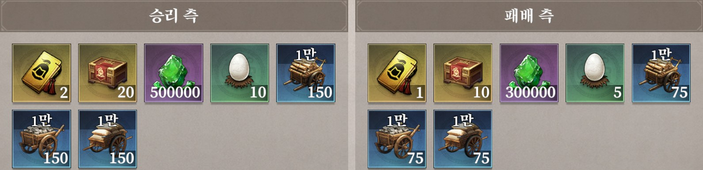

용쟁호투 · 보상 총정리
용쟁호투 · 보상 총정리
45분,
우리가 챙길 것들
이겨도 남고, 져도 남습니다. 재개 시즌부터 보상은 동맹 승패 보상과 개인 포인트 구간 보상 두 가지로 정리되었고, 둘 다 이벤트 종료 후 우편으로 함께 옵니다.
이겨도, 져도 남는다
패배해도 절반 이상은 보장됩니다. 그래도 이기는 쪽이 훨씬 큽니다 — 그 차이를 만드는 건 결국 우리 모두의 45분입니다. 아래 수치는 이전 시즌 캡처 기준이며, 재개 시즌 값은 공지 후 갱신합니다.

🏆 승리 측
보석500,000
자원 수레 (1만 단위)150 × 2종
군량600
보물 상자20
둥지(계란)10
패배 측
보석300,000
자원 수레 (1만 단위)75 × 2종
군량400
보물 상자10
둥지(계란)5
보석 1.7배, 자원 수레 2배 — 승리의 값어치는 명확합니다.
패배해도 보석 300,000·수레 75×2를 그대로 받습니다. 참가 자체가 손해는 아니라는 뜻입니다. 다만 승리 시 자원 수레는 정확히 2배, 계란(성장 자원)도 2배입니다. 초반 23분에 만들어지는 격차 하나하나가 결국 이 차이로 돌아옵니다.
내 점수만 채우면 됩니다
재개 시즌부터 개인 랭킹과 이벤트 임무 보상은 폐지되었습니다. 대신 이벤트가 끝날 때 내 개인 포인트가 도달한 구간에 따라 보상을 받습니다. 남과 경쟁하지 않습니다.
1종만
도달한 가장 높은 구간 하나의 보상만 지급(하위 구간 누적 아님)
우편 발송
승 / 패
같은 구간이라도 승리 측 / 패배 측 보상표가 따로 — 주력군이 이기면 개인 보상도 커집니다
시즌마다 다름
탭
이벤트 화면 개인 보상 탭을 열면 현재 포인트로 도달 가능한 구간으로 자동 이동
게임 내 확인
🏆 승리 측 구간 보상
구간별 수치공지 후 반영
패배 측 구간 보상
구간별 수치공지 후 반영
| 구간 | 주둔 시간 | 초당 | 포인트 |
|---|---|---|---|
| 맹호성 과반 | 6분 (360초) | 500 | 180,000 |
| 비룡성 과반 | 7.5분 (450초) | 800 | 360,000 |
| 1사이클 합계 | 540,000 | ||
| 2사이클 합계 | 약 1,080,000 |
작전대로 움직이는 것이 곧 개인 보상 극대화입니다.
맹호성·비룡성 과반 주둔만으로 두 사이클이면 100만 포인트 안팎이 쌓입니다(교전·도적거점 처치 포인트 별도). 구간 보상표가 공지되면 어느 구간까지 닿는지 여기에 표시하겠습니다. 배치와 타이밍은 작전 브리핑에서 확인하세요.